Audiobook Club: Connecting Audiobook Listeners Through Recommendations and Commentary
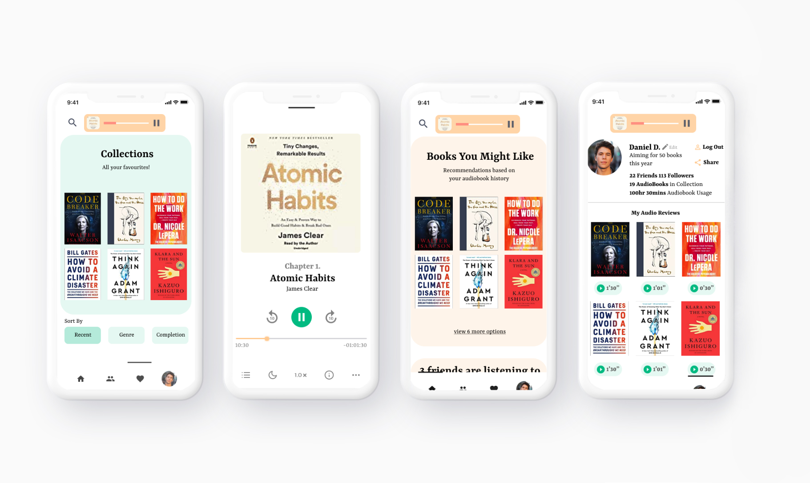
Process

Understanding our Persona
Using surveys and interviews in order to understand our persona and the direction we wished to take our app in.

Crafting our Persona
Crafting our persona based upon user interview and survey results, sorting findings by affinity mapping and coding.

Prototype Creation
Based upon our findings, we formed a prioritization matrix to determine which features to include within the app.
Overview
In 2020, more than 71,000 audiobooks were published per year. According to goodereader.com, the audiobook industry is also set to be the fastest growing sector within the publishing world.
With audiobooks in demand, our group set out to tackle the issue of how audiobook readers retained what they listened to. What we discovered was contrary to our initial assumption and caused us to fundamentally change our problem statement.

Problem Statement
How might we make it easier for audiobook listeners to connect with others, as well as search for what they want to read?
Step 1: Understanding our Persona
In order to understand our persona, I drafted out a series of survey questions and contacted individuals to schedule interviews. All survey participants and interviewees were recruited online using Reddit, Facebook, and forums such as the Librivox forums.
Questions ranged from how they first got into audiobooks, how they retained what they listened to, what features they preferred, and their listening habits. In total we received 102 survey responses & 10 interviews within a week.
After sorting our findings, we used an Excel sheet to code them into clusters of tags for qualitative analysis, then represented findings visually using an affinity map. We discovered that the majority of users did not take notes at all — instead, they shared what they learned with others via word of mouth. Audiobook listeners were more likely to listen while on commute, receive recommendations through word of mouth, and were most interested in reading recommendations.
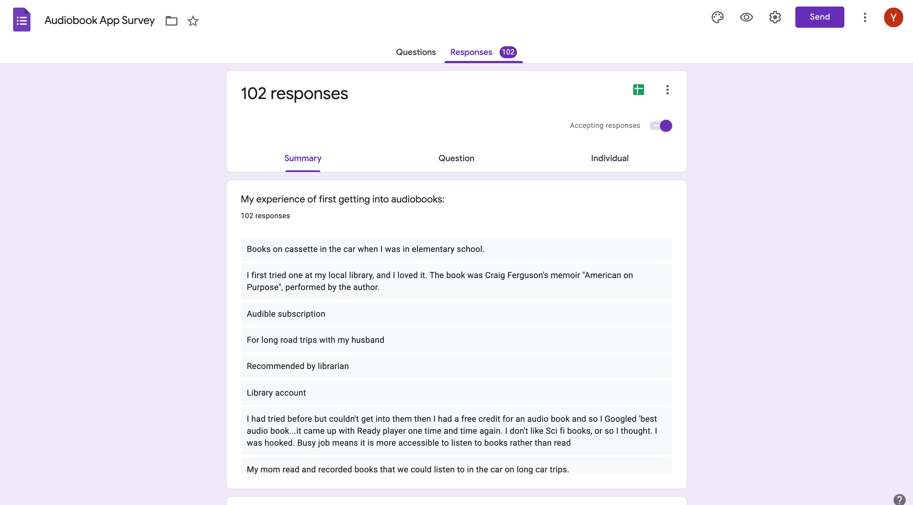
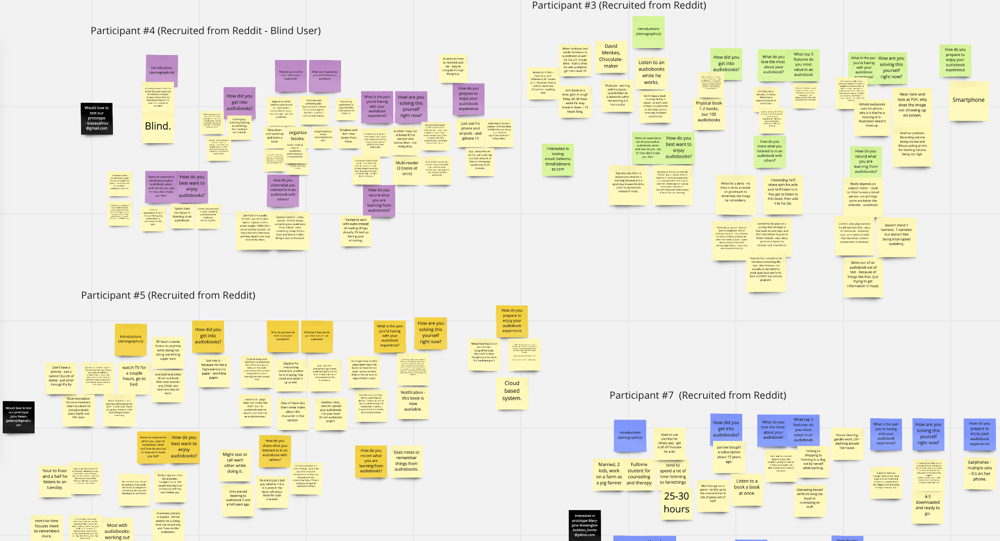
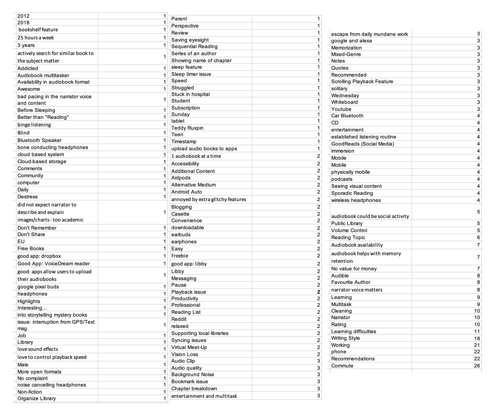
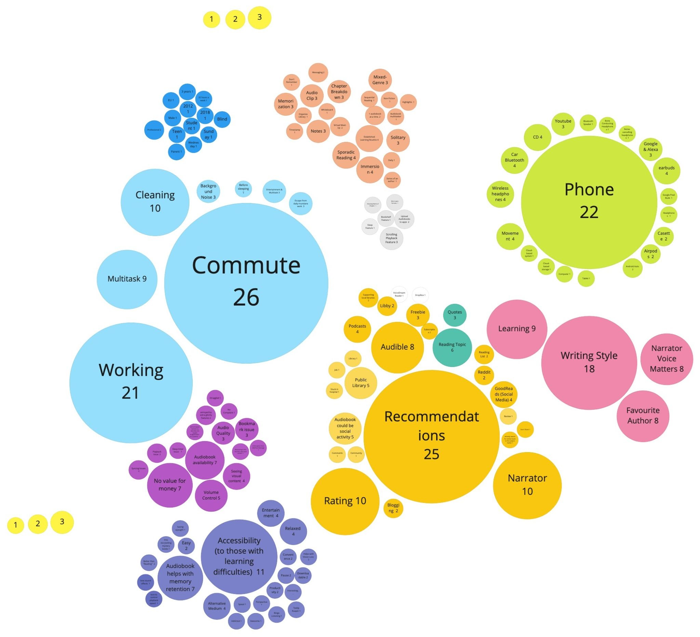
Step 2: Crafting our Persona
Based upon our affinity mapping results, we created 2 personas — one based upon housewives (the majority of our survey respondents), and one based upon those who multitask by listening to audiobooks while doing menial tasks like administrative or data-entry work.
Based upon our personas, we then created a customer journey to better understand how our target user would interact with the app.
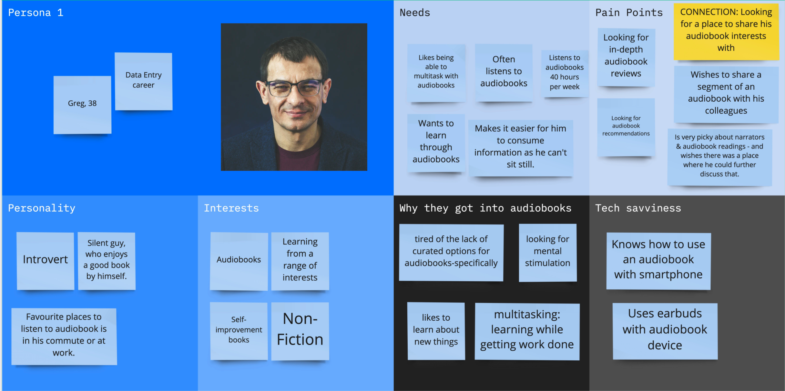
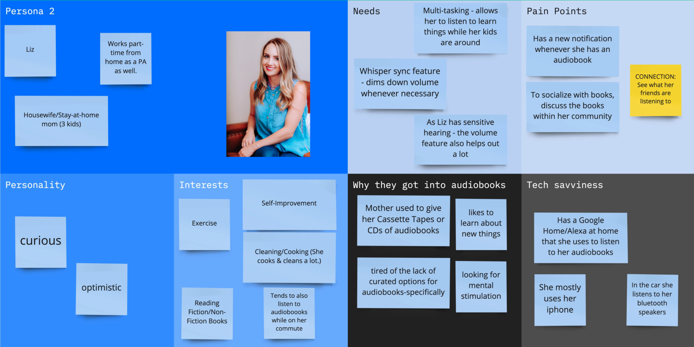
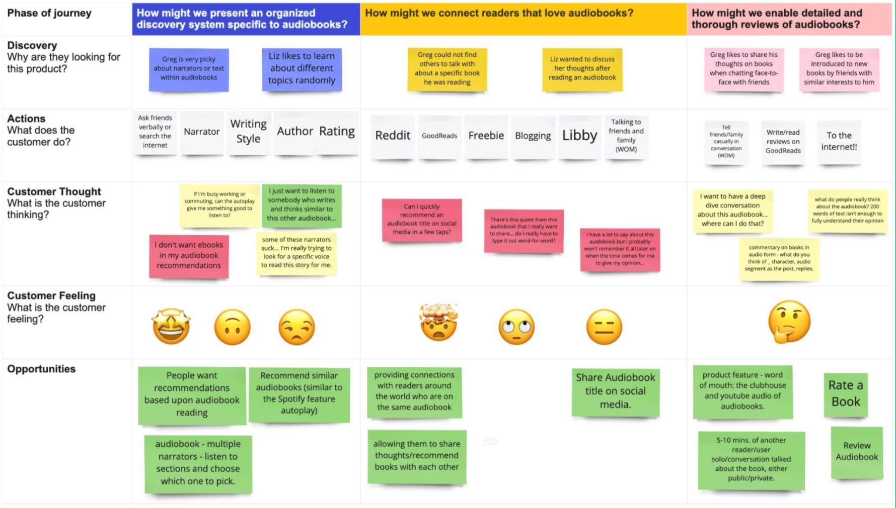
Step 3: Prototype Creation
To decide which features to include, we used a prioritization matrix. Interestingly, we found that users wanted specific audiobook controls like a sound bookmark, narrator selection, and volume adjustment.
Given our time and scope constraints, we decided to focus on audiobook recommendation features and the social aspect of listening — since users were most interested in knowing what their friends and family were listening to.
We also added a voice-commentary feature, in which users could comment on favorite audiobooks using audio instead of text — fitting the commuter use case where typing is inconvenient.
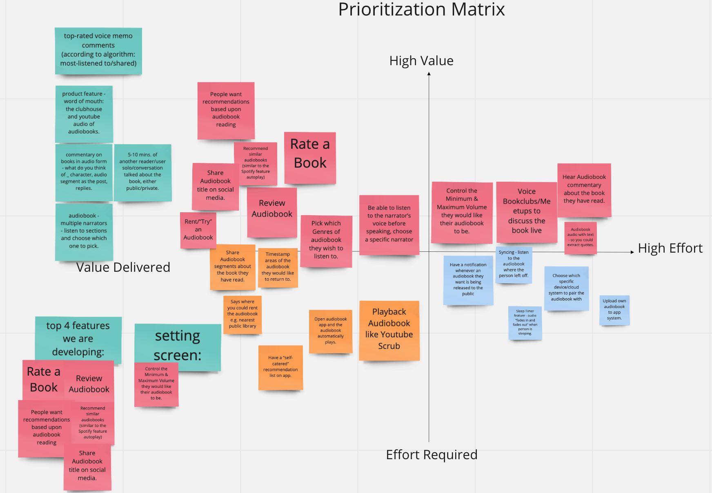
Prototype Features

Audiobook Recommendations
View audiobook recommendations based upon audiobooks you have previously listened to or liked.

Audiobook Collections
Sort your audiobooks into collections and filter by recent, genre, or completed.

People You May Like
Make new audiobook friends and follow people based upon what you have listened to. Challenge yourself to listen to more audiobooks by finding your place on the reading leaderboard.
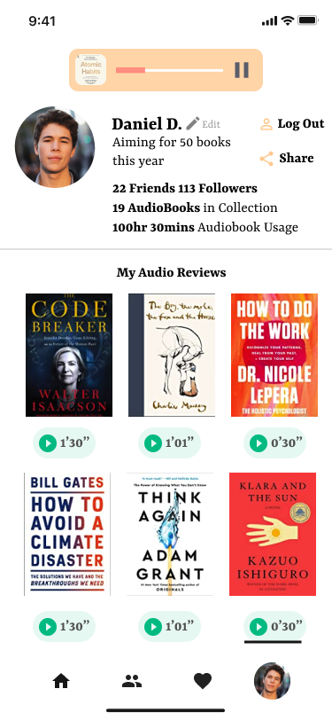
Profile
View the profiles of yourself or your friends, listen to their audiobook commentary, and see what they are currently reading.

Change Audiobook Speed
Change audiobook speed and leave your audiobook playing in the background while you focus on other tasks.
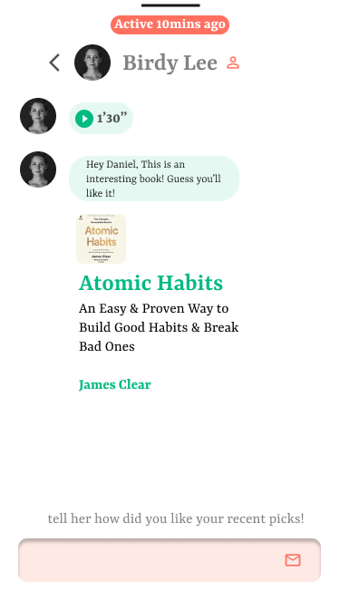
Send Messages
Send messages to friends via text or audio, and share audiobook recommendations.
Outcomes & Results
We had to change the direction of our HMW statement — the original prompt involved deciphering findings based upon notes, but 81.8% of the readers did not take notes at all while listening to audiobooks. Our final app prototype was informed entirely by these findings.
Bias was a concern: the majority of our survey responses were facilitated through a single Facebook group. Next time we would use rationed sampling, with recruitment across all sorts of age-ranges and social media groups to prevent this.
Further Steps & Improvements
Would like to expand the target audience towards those with disabilities — interviewing a blind person changed my perspective on how much audiobooks help individuals with ADHD, dyslexia, and blindness.
Better sample planning is needed in future: Reddit interviewees tended to be men in their 30s–40s, while Facebook listeners tended to be women in their 50s — demographic variety matters for a product meant to be inclusive.
Terminology standardization is also an open question, since "audiobook listener" vs "audiobook viewer" reflects deeper uncertainty about how the field defines its users.